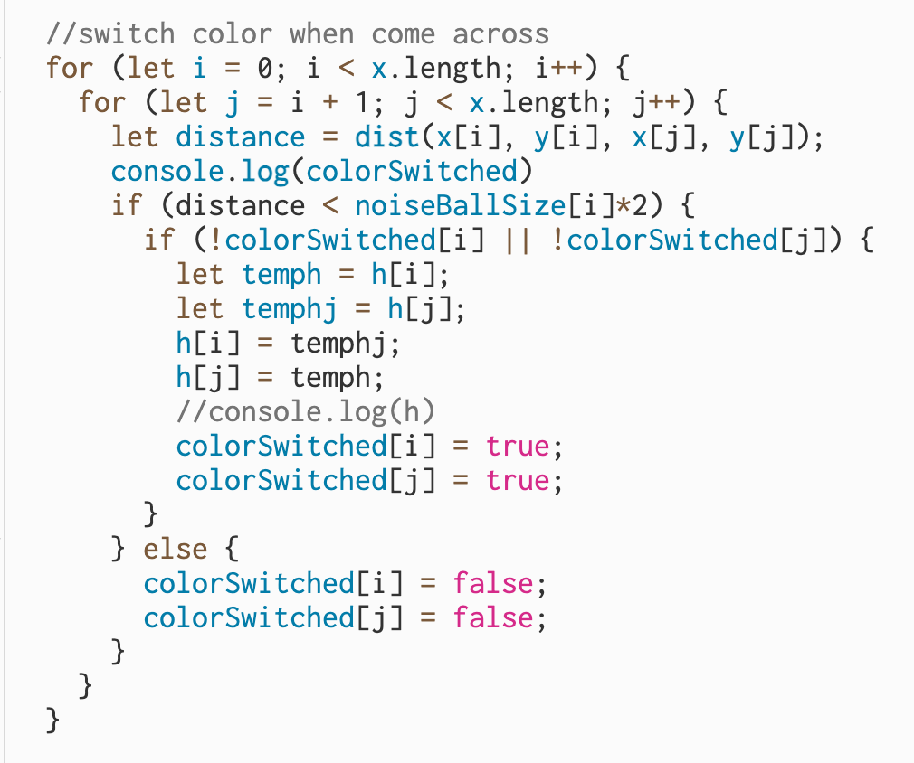

Introduction
Welcome to the enchanting realm of the Jellibop. It's a unique digital marine creature, reminiscent of a wavy jellyfish, brought to life through art and technology. What makes the Jellibop truly special is its ever-changing nature. With each creation, it evolves in color, shape, and motion, giving it a distinct character and story. Dive into the world of the Jellibop, explore this fascinating creature and discover its mysteries.
Instructions
- Click to release the Jellibop
- Press “Enter” key to switch to feeding mode and click to release the snack
- Press “Enter” again to switch back to creature release mode
Narrative
This cute, wavy, jellyfish-like creature we call Jellibop starts as a tiny droplet of digital magic and springs into motion, moving with a noisy fluidity. What makes the Jellibop really special is that it's not the same every time. Its color, shape, and the way it moves are different with each new one we create. As it glides through its watery world, it grows naturally, and when it reaches a certain size, it changes direction. The Jellibop even enjoys snacks – it's a bit of a carnivore, and when you release tasty treats, it happily gobbles them up and gets bigger. Once it gets big enough, it splits into two, starting the cycle all over again. In groups, Jellibops synchronize their colors, revealing a social, colorful dance.
Challenges Encountered
During the creation of the Jellibop project, I encountered an interesting challenge that provided an unexpected twist to the creature's behavior. My original plan was to implement a color switch mechanism, where when two Jellibops came into close proximity, their colors would interchange as if they were engaged in a vibrant conversation. However, technical issues surfaced here, and I found that the two creatures kept changing colors continuously until they moved apart. This unexpected behavior, while fascinating, wasn't in line with my initial vision. In response to this challenge, I decided to pivot and introduced a rule that allowed the Jellibops to adopt a uniform color when in close proximity. This change brought about a unique form of social interaction.
